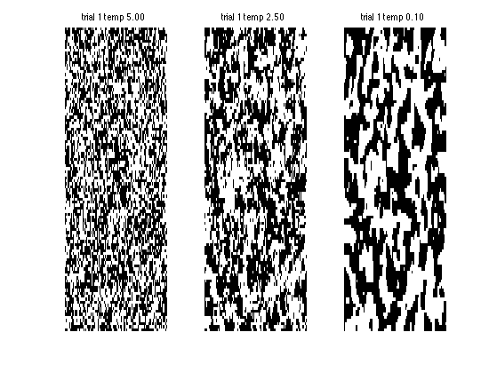

function gibbsDemoIsing()
pixelX = 100;
pixelY = 100;
Xsamp = zeros(pixelX, pixelY, 3, 3);
temps = [5 2.5 0.1];
seeds = 1;
for t=1:length(temps)
T= temps(t);
J = 1/T;
for trial=1:length(seeds)
seed = seeds(trial);
rand('state', seed);
figure(1);clf
Xsamp(:,:,trial,t) = gibbs(pixelX, pixelY, J);
end
end
figure(2);clf
for t=1:length(temps)
for trial=1:length(seeds)
subplot2(length(seeds),length(temps),trial,t)
imagesc(Xsamp(:,:,trial,t)); colormap(gray); axis off
title(sprintf('trial %d temp %3.2f', trial, temps(t)))
end
end
function X = gibbs(pixelX, pixelY, J)
X = ( 2 .* ( rand( pixelX, pixelY ) > 0.5 ) - 1 );
for iter = 1 : 50000
if iter>10000 & mod(iter,5000) == 0
imagesc(X); colormap(gray); title(sprintf('J=%5.3f iter=%d', J, iter))
drawnow
end
ix = ceil( pixelX * rand(1) );
iy = ceil( pixelY * rand(1) );
pos = ( ix - 1 ) * pixelY + iy;
neighborhood = pos + [-1 1 -pixelY pixelY];
neighborhood( find( [iy == 1 iy == pixelY ix == 1 ix == pixelX] ) ) = [];
wi = sum( X(neighborhood) );
if rand(1) < sigmoid(2*J*wi);
X( iy, ix ) = +1;
else
X( iy, ix ) = -1;
end
end

